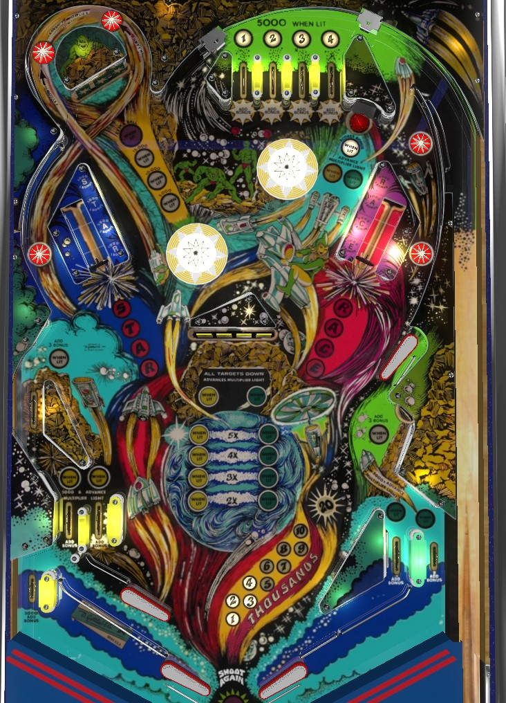

Collect top lanes from the plunge or right orbits to light yellow and green lights around the playfield. Features lit with yellow and green lights advance toward bonus multiplier: one collected green light plus one collected yellow light equals one bonus multiplier, which carries over from ball to ball. Drop targets and vary targets build bonus; upper right saucer collects bonus if the base bonus is at least 20,000.
A full plunge goes to the 1-2-3-4 top lanes. A short plunge can avoid the top lanes and come down the right orbit, which is not preferred. Top lanes score 5,000 points, or 500 when not lit. Roll through a lit lane to unlight it. Collecting numbers lights various features around the game for a green or yellow advance.
Collecting both one yellow advance and one green advance increases the multiplier to 2x bonus. 2 yellows and 2 greens award 3x bonus; 3 and 3 gives 4x bonus; 4 and 4 maxes out the bonus multiplier at 5x. Bonus multiplier and colour advances are carried from ball to ball, making it important to give yourself as many ways to build it as early as possible.
The vary targets recognize 4 levels of push distance: from strongest to weakest, they give 5,000 points and 5 bonus advances; 3,000 and 3 advances; 2,000 and 2 advances; 1,000 and 1 advance. Each level of hit also awards a different letter: S, T, A, R respectively for the left vary target, and R, A, C, E respectively for the right vary target. Collecting all 4 types of hits on a single vary target during a game- and therefore spelling Star or Race- awards an instant special, which is worth 50,000 points in competition/novelty play.
Each drop target down scores 5,000 points and a bonus advance. Clearing the bank scores and advances the orbit value, which starts at 5,000 points and increases to 10,000, then 15,000. Advancing the orbit value to 15,000 also lights the bank for extra ball at the next completion. Extra ball scores 50,000 points in competition/novelty play.
A full shot to the left orbit consists of a ball going to the left of the Star vary target and following the trail of fire on the playfield around the upper left drop targets in an anticlockwise fashion; the ball forms part of the & symbol with its shape. A shot that does this will be awarded both a yellow advance and a green advance, plus scoring and advancing the orbit value. Extra ball can be lit via an orbit shot, but I do not believe an orbit shot can collect the extra ball. A ball that goes around only the top part of the orbit shot, such as a cross playfield shot from the upper right flipper, does not seem to give these awards.
In addition to being lit for green and yellow advances as described previously, the upper right saucer will also be lit for Bonus Collect if the base bonus is increased to at least 20,000 points. Bonus collected in this way does include the current bonus multiplier; afterward, base bonus is reset, but multiplier is kept intact, so keep this in your back pocket until multiplier is raised a bit.
Each target down scores 5,000 points and a bonus advance. Clearing the bank resets the targets and awards a yellow and/or green advance if #2 and/or #3 have been collected respectively. Due to the slightly wider than normal gap between the two lower flippers and the placement of the center drop targets, it usually ends up being quite dangerous to rely heavily on this bank.
The bottom of the table on Star Race is somewhat complicated. On the left, there is no slingshot. The near left in lane feeds the upper left flipper. The far left flipper feeds a junction point; the ball can either fall into the left out lane for a drain, or stop first, continuing down the metal rail to the lower left flipper. There is no one-way gate anywhere in this setup, so a ball that rolls up the lower left flipper with speed can find itself all the way in the out lane, despite being a good distance away. The right side setup is more conventional, with one flipper, one slingshot, one in lane, and one out lane; however, the bottom corner of the slingshot is very far away from the flipper, making post transfers impossible.
All in/out lanes score 5,000 points and a bonus advance. The far and near left in lanes are also lit respectively for a yellow advance if the 1 and 2 have been collected; the right in and out lanes are also lit respectively for a green advance if the 3 and 4 have been collected.
Bonus is advanced 1 time by any drop target or rollover lane, and can be advanced 1 or 2 or 3 or 5 times by vary targets. Max base bonus is 29,000 points. Multiplier is increased by collecting both a yellow advance and a green advance. Max bonus is 5x 29,000 = 145,000 points. Bonus can be collected mid-ball at the upper right saucer once base bonus is at least 20,000 points; doing so resets the base bonus, but not the multiplier. Bonus multiplier always carries over from ball to ball, but base bonus never does.
In competition/novelty play, both extra balls and specials score 50,000 points. By default, this is accompanied by 5 hits of the replay knocker counting off each 10,000 points.